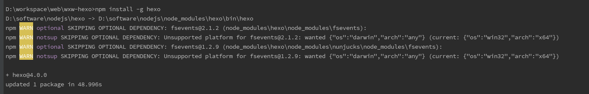
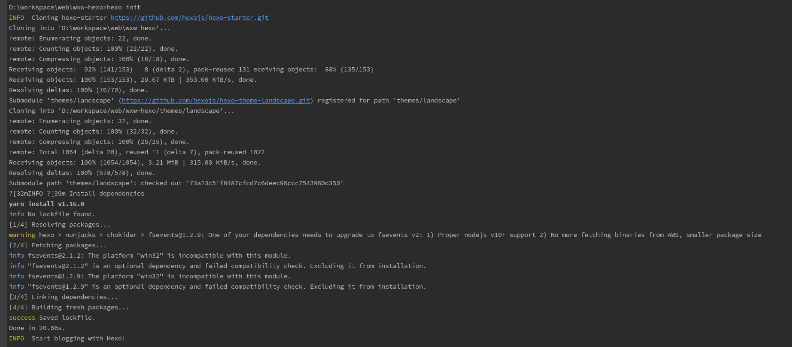
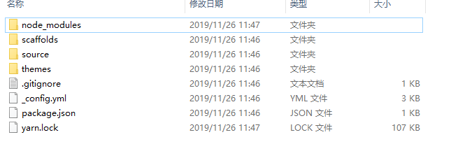
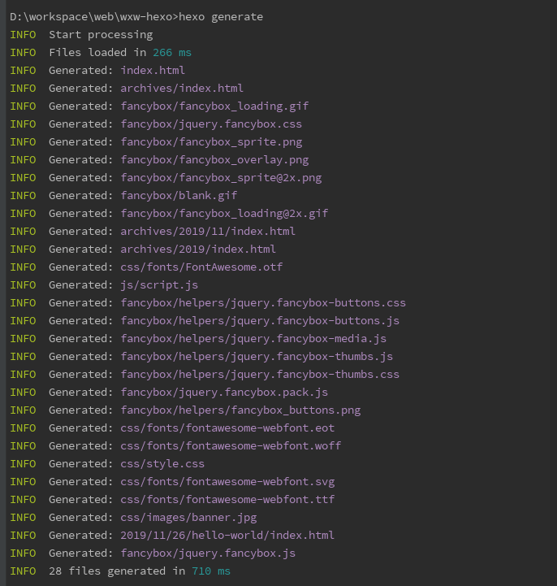
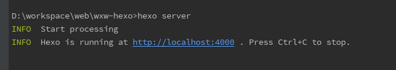
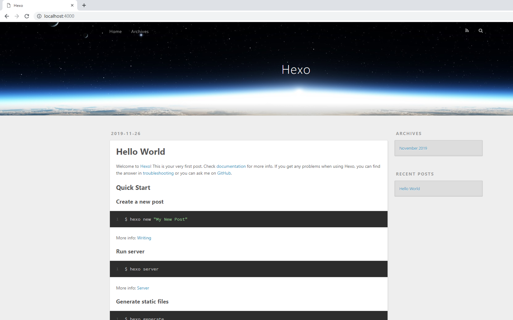
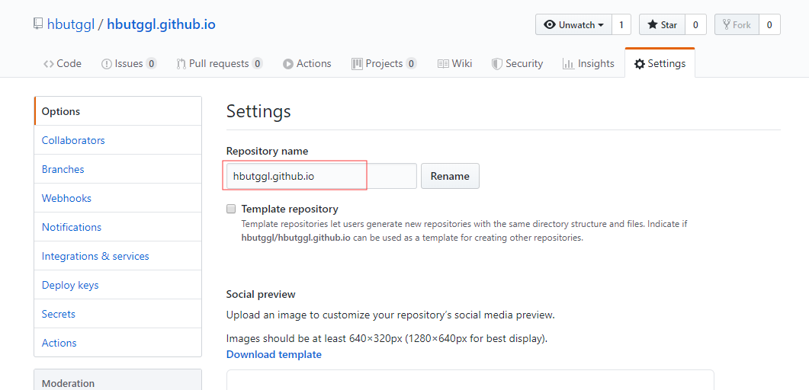
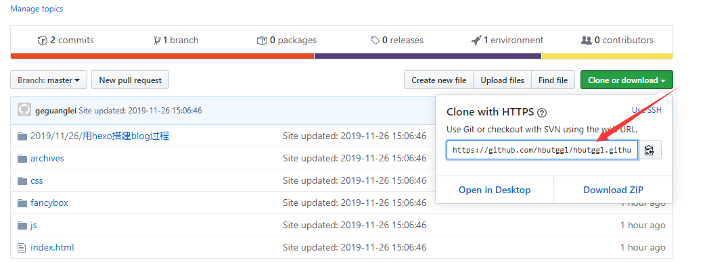
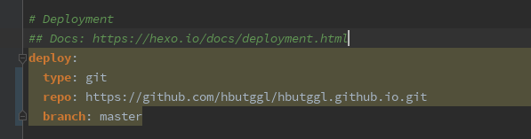

记录搭建hexo博客的过程
十一月 26, 2019
1 创建一个空文件夹wxw-hexo，在cmd命令窗口执行安装hexo命令：npm install -g hexo

2 这时候hexo命令可以用了，执行hexo下载初始模板：hexo init
执行该命令时，文件夹下面不允许有文件。本人是在创建空文件夹之后，用webstrom打开，在webstorm中执行的命令，此时文件夹wxw-hero下有.idea文件夹，本人将其删除之后才运行成功的命令

3 初始模板下载好了之后，用hexo generate命令生成静态文件
初始模板下载完成之后，文件夹下面会多出一些文件
执行hexo generate命令后：
4 执行命令hexo server，启动服务器，默认地址为http://localhost:4000/，访问即可打开默认的主题

访问默认地址，如图显示：
到此完成第一步，下一步在github中设置显示自己的博客
5 在自己的github仓库中新建一个项目，并将项目名修改程自己github账户名：githubname.github.io
6 修改项目配置文件_config.yml，将github的项目地址写入


7 项目中执行以下命令，将代码部署到github
1 | npm install hexo-deployer-git --save |
8 部署成功后，访问https://githubname.github.io，即可看到自己的博客。
9 需要注意的地方
hexo deploy部署后，会将静态文件上传到github的项目中，但是本地的wxw-hexo文件夹内容并没有上传，所以如果添加或修改博客的时候，需要在原文件夹下修改。
考虑到换电脑或者工作环境的情况，可以将wxw-hexo文件下的代码上传到另外一个新建的github项目中。（一个项目专门管理源代码，一个用来部署静态文件）。
网上有动态部署的方法，暂时还没有研究。
查看评论